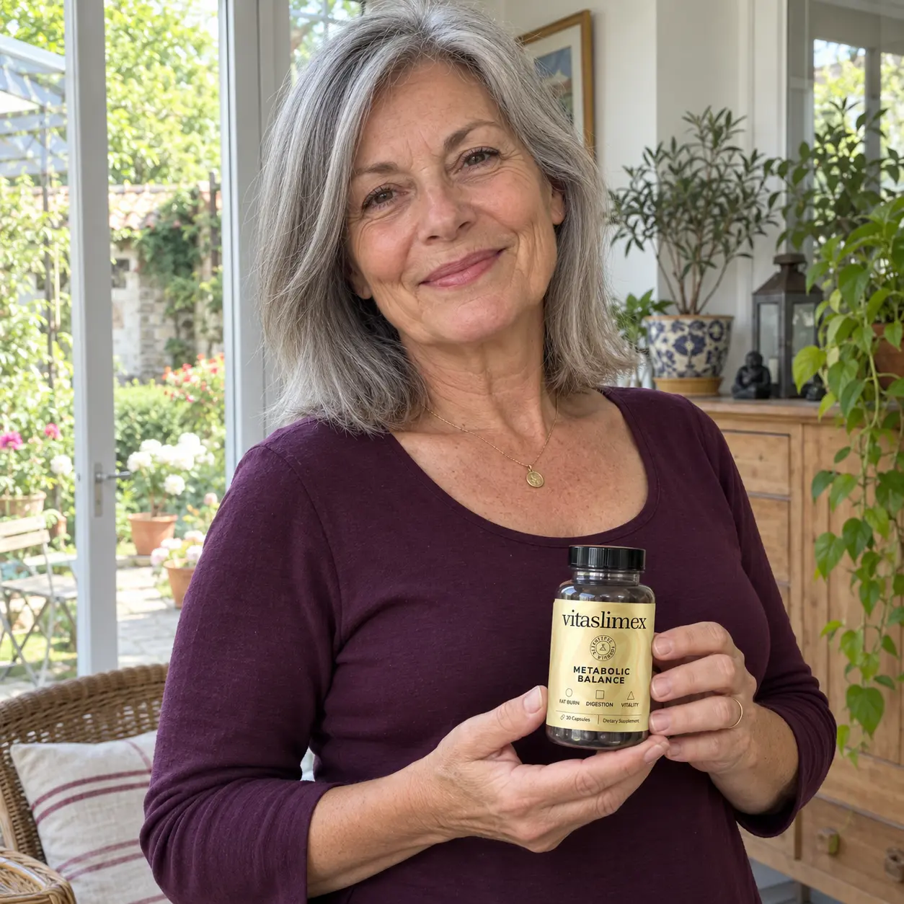
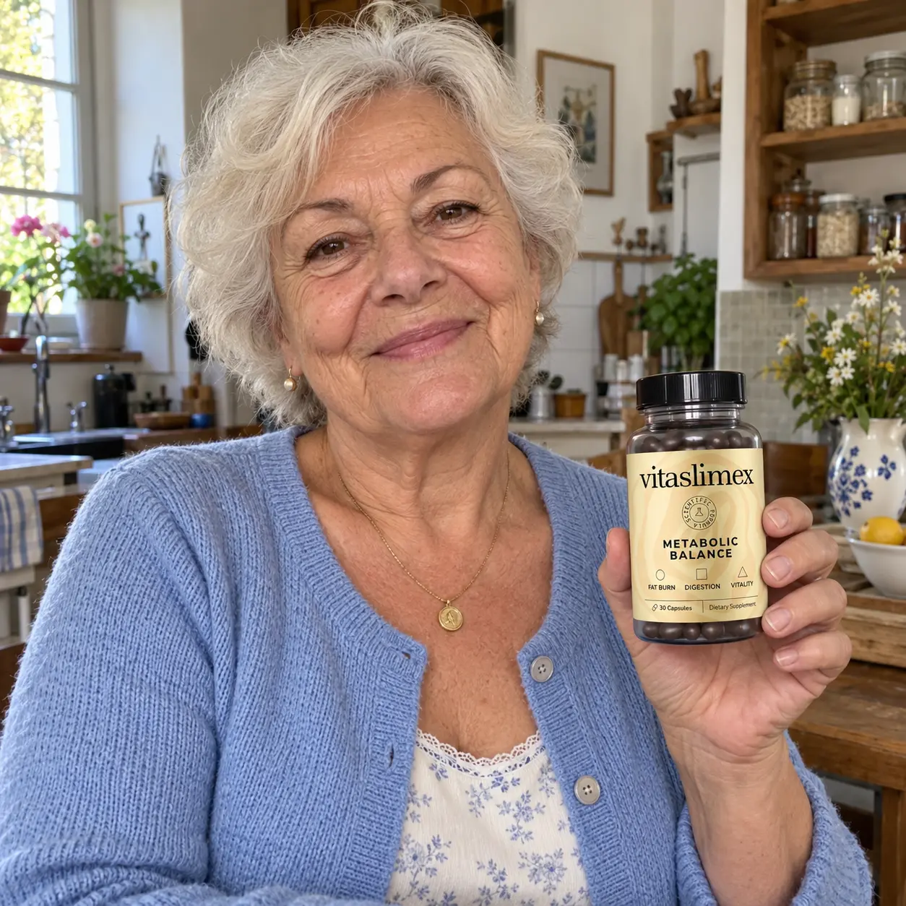
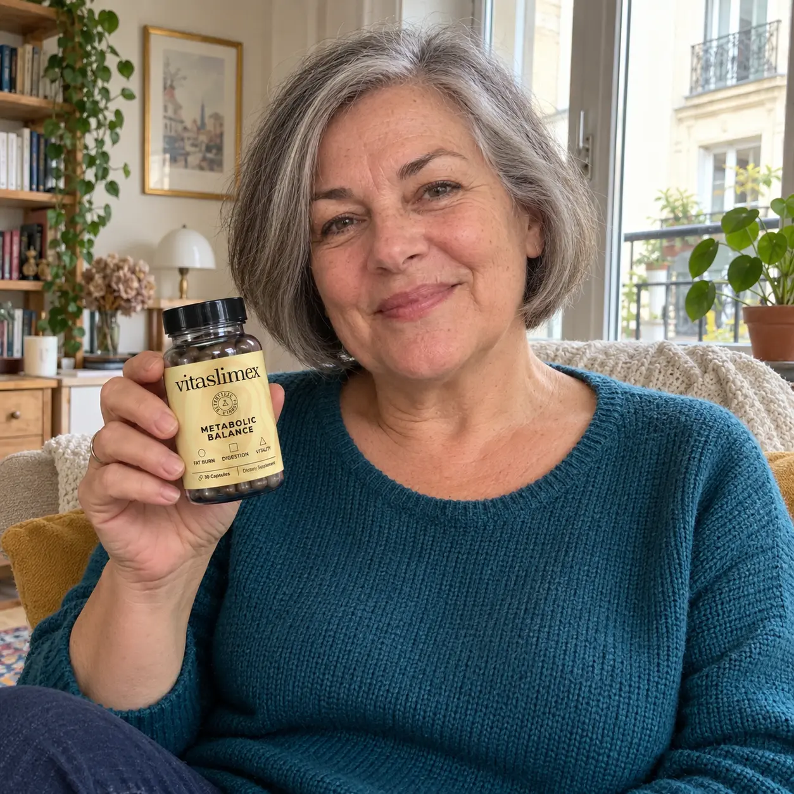
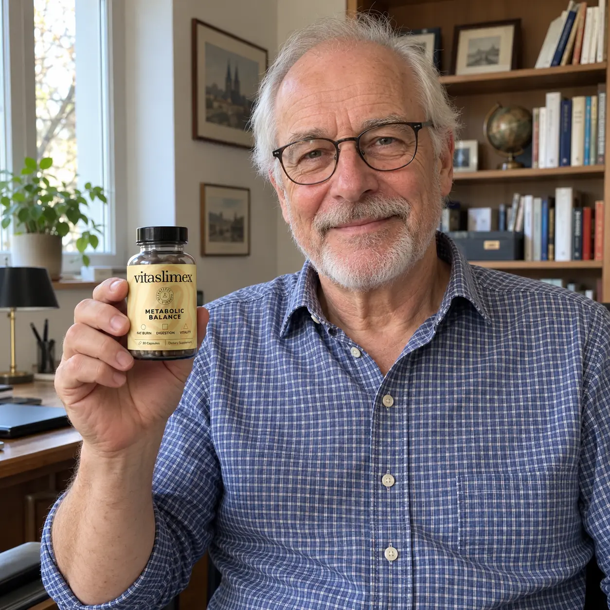
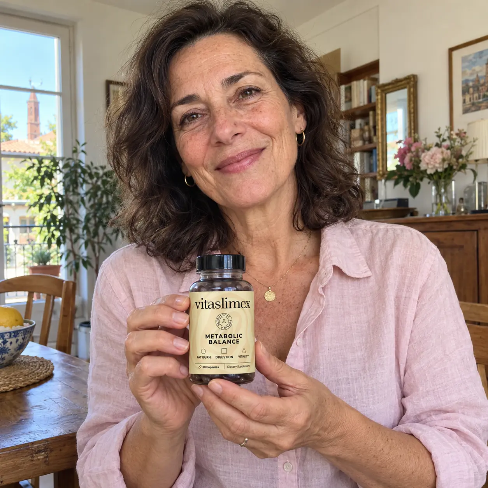
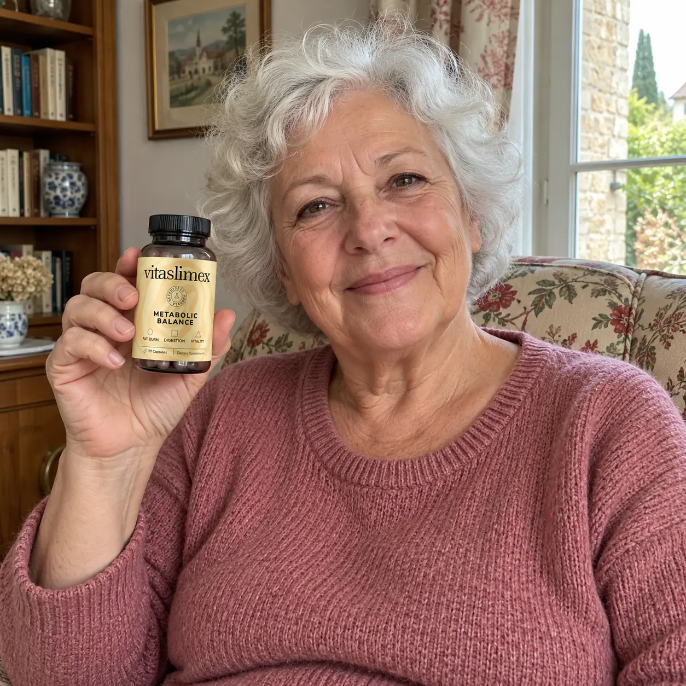
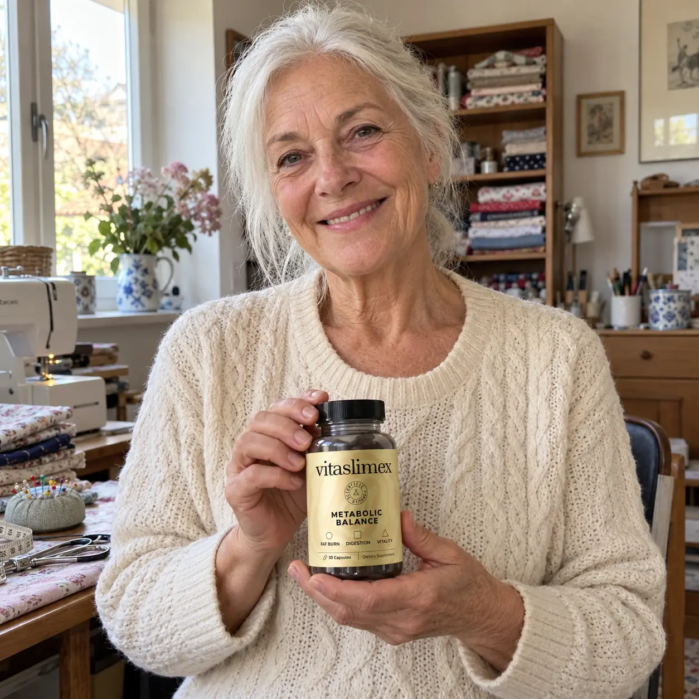
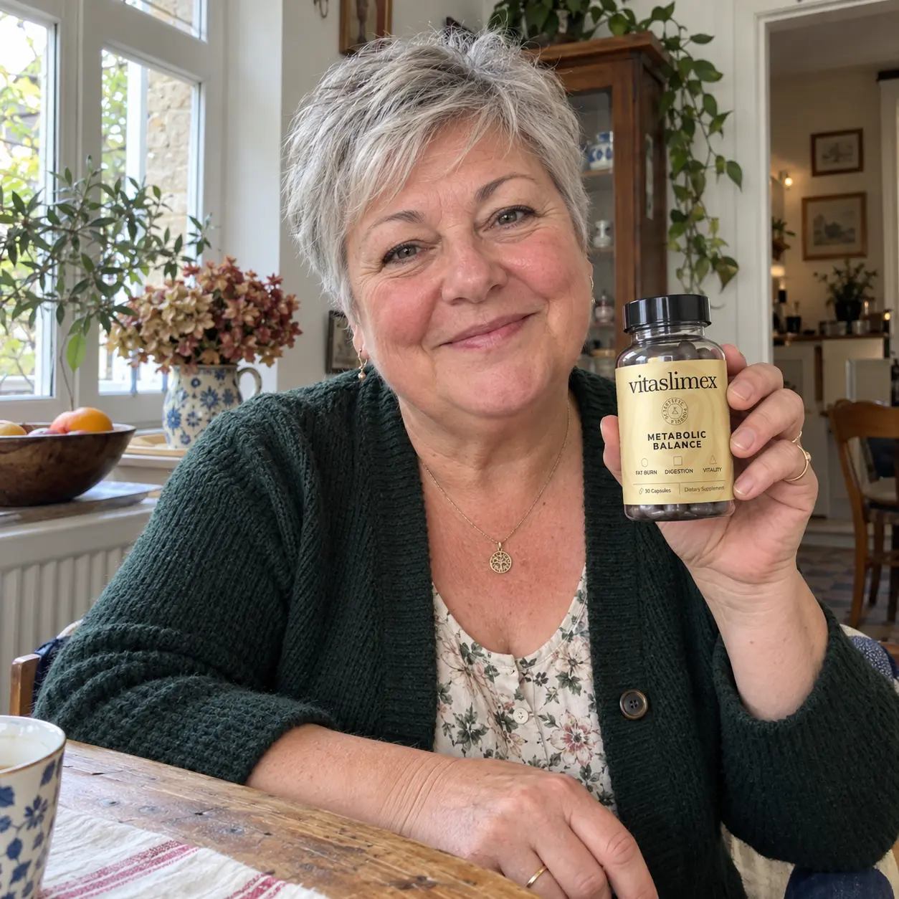
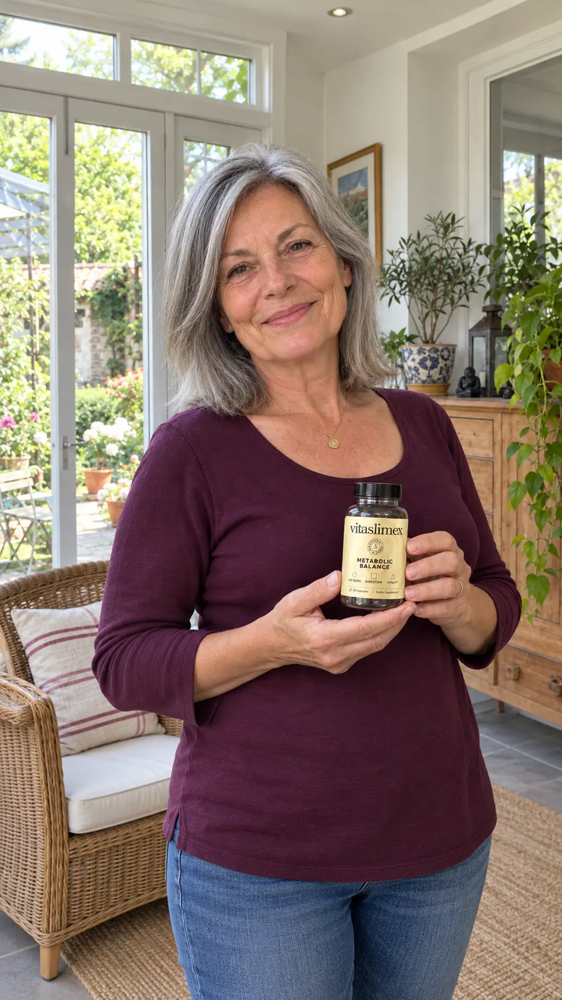

« Grâce à Vitaslimex, j’ai perdu 5 kilos en un mois. »
Grâce à Vitaslimex, j’ai perdu 5 kilos en un mois. Je me sens plus en forme et pleine de confiance !
Vitaslimex est présenté comme un complément alimentaire en gélules. Cette présentation met l'accent sur le choix des ingrédients et sur la façon de consulter les caractéristiques de la formule avant un achat.
Parmi les ingrédients annoncés figurent le thé vert, le ginseng coréen, le gingembre, la cannelle et le vinaigre de cidre. Un complément ne remplace ni une alimentation variée ni une activité physique adaptée. Les effets sur la perte de poids ne sont pas établis de manière indépendante.

Reprenez le Contrôle de Votre Poids et de Votre Silhouette avec Vitaslimex
Vitaslimex est une formule minceur aux extraits végétaux pensée pour accompagner la gestion du poids, le métabolisme et la maîtrise de l’appétit. Intégrez-la simplement à votre routine pour rester concentré sur votre silhouette, avec la vitalité et le confort digestif comme bénéfices complémentaires.
Garantie Satisfait ou Remboursé de 30 Jours










Grâce à Vitaslimex, j’ai perdu 5 kilos en un mois. Je me sens plus en forme et pleine de confiance !

Après des années de lutte contre mon poids, j’ai enfin obtenu les résultats que j’espérais avec Vitaslimex.

Vitaslimex est ma meilleure décision de l’année : j’ai enfin pu atteindre mes objectifs de perte de poids.
Vitaslimex réunit dans une seule formule des ingrédients tels que le thé vert, le poivre de Cayenne, le gingembre et le vinaigre de cidre. Un choix pratique pour accompagner vos objectifs de poids et votre routine quotidienne.
Chaque commande de Vitaslimex est accompagnée d’une garantie satisfait ou remboursé de 30 jours. Choisissez votre pack et commencez votre routine minceur en toute simplicité.


Vitaslimex est un complément alimentaire en gélules créé pour les adultes qui veulent reprendre le contrôle de leur poids et se donner une routine minceur claire, sans complications inutiles.
Entre les journées chargées, les grignotages et les repas pris trop vite, il devient facile de perdre de vue ses objectifs. Pour avancer, le plus important est de pouvoir rester régulier et motivé.
Vitaslimex associe notamment thé vert, poivre de Cayenne et orange amère dans une formule orientée vers le métabolisme et la thermogenèse, deux thèmes au cœur de son positionnement minceur.
Le gingembre, le vinaigre de cidre et la cannelle complètent sa composition. Le ginseng, la berbérine et le resvératrol viennent enrichir cette association végétale autour du bien-être général.
Une cure Vitaslimex s’intègre à vos habitudes : repas équilibrés, hydratation, mouvement et objectifs de poids progressifs. La formule complète votre démarche sans en remplacer les fondamentaux.
Votre objectif est simple : retrouver une silhouette dans laquelle vous vous sentez à l’aise, en gardant le plaisir de manger et une routine que vous avez envie de poursuivre.
Choisissez la durée de cure qui vous convient : 30, 60 ou 90 jours. Votre commande est accompagnée de la garantie satisfait ou remboursé de 30 jours.
Vitaslimex place la gestion du poids au premier plan. Sa formule végétale s’intègre à une démarche minceur axée sur le métabolisme, l’appétit et la régularité, avec plusieurs atouts complémentaires pour votre bien-être.
Faites de votre objectif minceur une habitude quotidienne : choisissez votre cure Vitaslimex et avancez à votre rythme vers une silhouette plus légère.
Vitaslimex associe des extraits végétaux choisis pour accompagner une démarche centrée sur le poids et le métabolisme. Voici comment faire de cette formule une étape simple de votre routine minceur.
➤ Étape 1 : Choisir une Formule Ciblée sur le Métabolisme
Le thé vert, le Cayenne et l’orange amère forment le cœur de l’approche minceur de Vitaslimex. Ces ingrédients sont couramment présents dans les formules dédiées à la thermogenèse.
➤ Étape 2 : Garder le Contrôle des Fringales
Associez votre routine Vitaslimex à des repas réguliers et équilibrés pour mieux gérer les envies d’en-cas qui perturbent votre objectif de poids.
➤ Étape 3 : Rester Concentré sur Votre Silhouette
Suivez des objectifs progressifs : votre alimentation, votre activité et votre constance restent les clés d’un programme minceur durable.
➤ Étape 4 : Profiter des Atouts Complémentaires
Gingembre, ginseng et vinaigre de cidre enrichissent la composition, avec la vitalité et le confort digestif parmi les aspects complémentaires.
➤ Étape 5 : Installer une Routine qui Dure
Choisissez un rythme que vous pouvez conserver et respectez la notice de Vitaslimex. Une démarche cohérente vaut mieux qu’un changement extrême de courte durée.
Votre priorité : avancer vers votre objectif de perte de poids avec une formule simple et une routine adaptée à votre quotidien.
Vitaslimex propose une réponse simple aux adultes qui souhaitent compléter leur démarche minceur par une combinaison d’extraits végétaux, sans multiplier les flacons et les routines.
Choisissez dès maintenant votre cure Vitaslimex et faites de votre programme minceur un objectif clair, motivant et facile à intégrer à votre vie.
Vitaslimex associe plusieurs extraits botaniques dans une formule conçue pour accompagner vos objectifs de poids. Découvrez les ingrédients mis en avant pour son approche minceur et son soutien au bien-être général.
Le thé vert, le poivre de Cayenne et l’orange amère occupent une place centrale dans cette composition orientée vers le métabolisme. Les autres ingrédients complètent la formule autour de l’appétit, de la digestion et de la vitalité.
Bon à savoir : respectez les quantités indiquées sur l’étiquette et demandez un avis médical si vous prenez un traitement, notamment en raison de l’orange amère et de la berbérine.
Choisissez Vitaslimex pour une formule végétale facile à intégrer à votre programme minceur, avec la gestion du poids comme priorité et les autres bénéfices comme compléments.
Vitaslimex met la gestion du poids au premier plan avec le thé vert, le Cayenne, l’orange amère et d’autres extraits végétaux.
Associez votre cure Vitaslimex à des repas équilibrés, à une activité régulière et à des objectifs de silhouette que vous avez envie de poursuivre.
Choisissez votre programme de 30, 60 ou 90 jours et suivez la posologie indiquée sur l’emballage. Un format pensé pour s’intégrer naturellement à votre journée.
Votre achat de Vitaslimex s’accompagne d’une garantie satisfait ou remboursé de 30 jours. Choisissez votre pack minceur avec davantage de sérénité.
Découvrez la formule, intégrez-la à votre routine selon les indications du flacon et prenez le temps d’évaluer votre expérience.
Si Vitaslimex ne répond pas à vos attentes, contactez notre service client dans les 30 jours pour demander votre remboursement conformément aux conditions de garantie.
Commander avec la Garantie 30 JoursVitaslimex est conçu pour accompagner les adultes dans une démarche de gestion du poids. Il s’intègre à une routine alimentaire équilibrée et à une activité physique adaptée.
Vitaslimex associe des extraits végétaux comme le thé vert, le Cayenne et l’orange amère dans une approche tournée vers le métabolisme. La gestion de l’appétit, la vitalité et le confort digestif complètent cet objectif.
Suivez la dose et les conseils d’utilisation figurant sur l’étiquette de Vitaslimex. En cas de traitement médical, de grossesse ou d’allaitement, demandez conseil à un professionnel de santé avant toute prise.
Vitaslimex existe en cures de 30 jours (1 flacon), 60 jours (2 flacons) et 90 jours (3 flacons). Choisissez le format qui convient à votre programme minceur et à votre budget.
Une alimentation variée, des portions adaptées et une activité régulière sont les meilleurs compléments de votre routine Vitaslimex. Il n’est pas nécessaire d’adopter un régime extrême.
Votre commande de Vitaslimex bénéficie d’une garantie de remboursement de 30 jours. Contactez le service client pendant cette période pour connaître les étapes de votre demande.